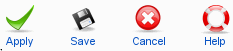

Bearbeiten oder fügen Sie neue Veranstaltungen in dieser Ansicht hinzu.
Bearbeiten oder fügen Sie neue Veranstaltungen in dieser Ansicht hinzu.
Folgendermaßen können Sie auf diese Ansicht zugreifen: Komponenten -> EventList -> Veranstaltung hinzufügen oder durch einen Klick auf eine Veranstaltung in der Übersicht.
 Super Administrator
Super Administrator  Administrator
Administrator  Manager
Manager

Hinzufügen: Speichert die Veranstaltung, ohne die derzeitige Ansicht zu verlassen.
Speichern: Speichert die Veranstaltung und wechselt in die Veranstaltungsübersicht.
Abbrechen: Bricht die Aktion ab und alle Änderungen sind dann verloren. Falls die Veranstaltung zum Bearbeiten geöffnet wurde, wird sie wieder eingecheckt.
Hilfe: Klicken Sie das "Hilfe"-Icon, um eine relevante Hilfe zu öffnen.
Titel: Geben Sie einen Titel ein, oder bearbeiten Sie (falls benötigt) hier den Titel der Veranstaltung.
Alias: Geben Sie ein einen Alias ein, oder bearbeiten Sie (falls benötigt) hier den Alias der Veranstaltung. Der Alias wird in der URL verwendet, achten sie also darauf nur URL sichere Zeichen zu verwenden. Falls Sie dieses Feld leer lassen, generiert EventList diese Angabe automatisch.
Veröffentlicht: Wählen Sie "Ja", um diese Veranstaltung zu veröffentlichen, oder "Nein", um sie unveröffentlicht zu lassen. Veröffentlichte Veranstaltungen werden auf dem Frontend dargestellt.
Veranstaltungsort: Wählen Sie den Veranstaltungort, an dem die Veranstaltung statt findet, oder wählen Sie "keinen". Wenn Sie möchten, können Sie auch einen neuen Veranstaltungsort in der Datenbank anlegen, wenn Sie den "Hinzufügen"-Button betätigen.
Kategorie: Wählen Sie die Kategorie, zu der die Veranstaltung zugewiesen werden soll.
Textfeld: Geben Sie hier die Beschreibung der Veranstaltung ein. In diesem Feld können Sie Plugins nutzen.
Datum: Wählen Sie das Datum. (zwingend)
Enddatum: Wählen Sie das Datum, an dem die Veranstaltung endet.
Zeit: Die Uhrzeit, zu der die Veranstaltung beginnt.
Endzeit: Die Uhrzeit, zu der die Veranstaltung endet.
Registrierung aktivieren: Wählen Sie "Ja", wenn Benutzer sich an Veranstaltungen anmelden können sollen.
Abmelden erlauben: Wählen Sie "Ja", wenn Benutzer sich wieder abmelden können sollen.
Bild: Wählen Sie ein Bild (Flyer) für die Veranstaltung, oder laden Sie ein neues hoch.
Wiederholende Veranstaltungen: Wählen Sie, in welchem Rhythmus Ihre Veranstaltung wiederholt werden soll: täglich, wöchentlich, monatlich, jährlich oder an einem bestimmten Wochentag im Monat. Anschließend wählen Sie den Zeitraum, der zwischen den Wiederholungen liegt.
Metadaten Information: Geben Sie Meta-Informationen ein, oder bearbeiten Sie (falls benötigt) die Meta Beschreibung und die Meta Schlüsselwörter der Veranstaltung in diesen Feldern. Nutzen Sie die Möglichkeit in den Einstellungen Werte vozudefinieren. In diesem Fall werden diese automatisch durch Ihre entsprechenden Eingaben ersetzt.